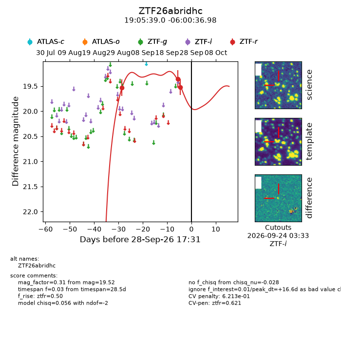
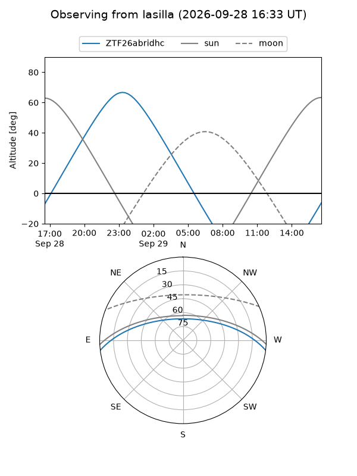
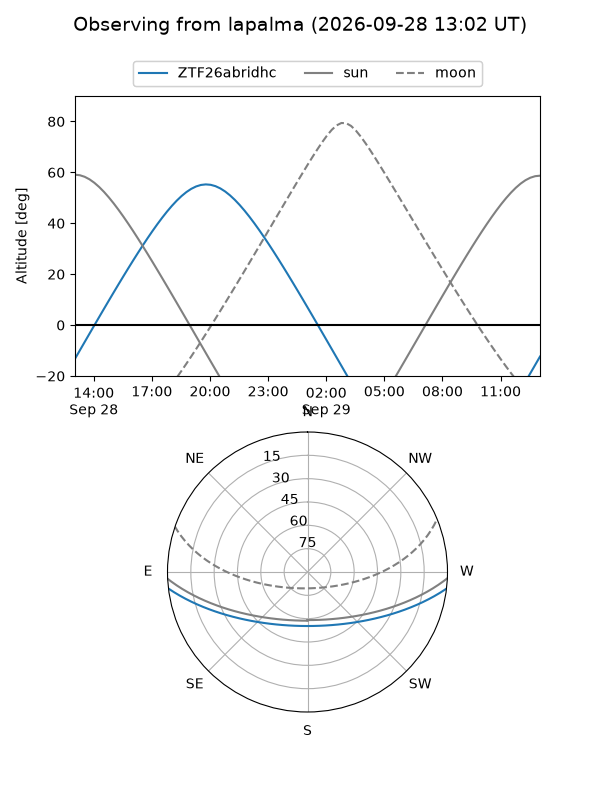
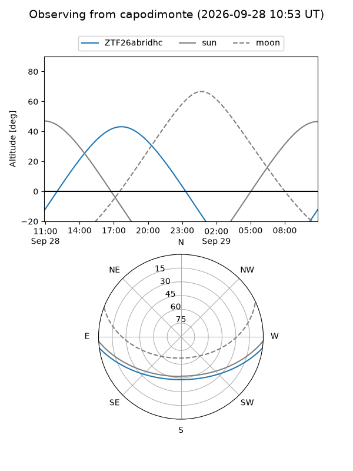
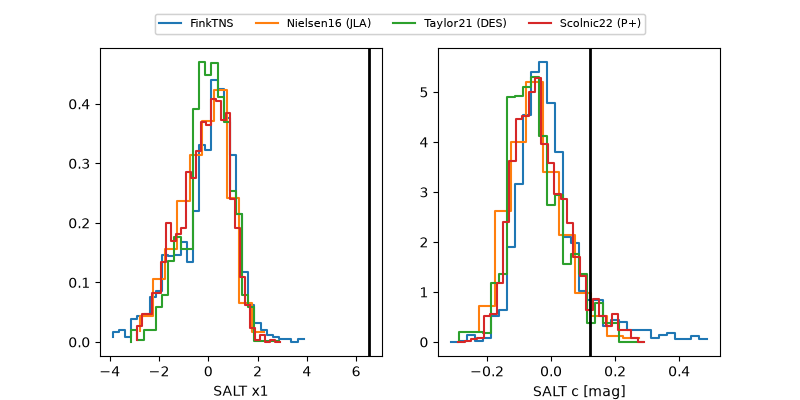

ZTF26abridhc
Target ZTF26abridhc at 2026-09-29 05:13
Aliases and brokers:
FINK-ZTF: ztf.fink-portal.org/ZTF26abridhc
Lasair-ZTF: lasair-ztf.lsst.ac.uk/objects/ZTF26abridhc
ALeRCE-ZTF: alerce.online/object/ZTF26abridhc
Direct TNS query: direct search
alt names
ZTF26abridhc (ztf,fink_ztf)
Coordinates:
equatorial (ra, dec) = 286.4127,-6.01027
equatorial (HMS+DMS) = 19:05:39.04,-06:00:36.98
galactic (l, b) = (29.1805,-5.88883)
Flags:
peak dt: +17.0
likely cv: !!
Photometry:
last ztfr=19.52
3 ztfr detections
Lightcurve

Visibility



Additional plots
